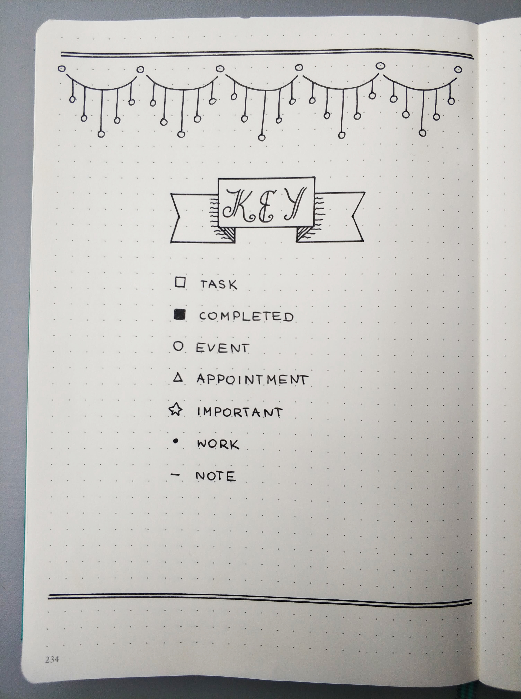

How to start Bullet Journal and useful tools at the beginning
What is Bullet Journal?
I hope that you have heard before about the amazing method of organisation which is Bullet Journal. However, if not I encourage you to watch the video that is attached underneath. This is a short instruction for beginners regarding how to start a Bullet Journal created by the author of this system- Ryder Carroll.
How to start?
It is a planning system that does not require you to need a fancy notebook or expensive writing tools. All you need is an ordinary notebook which you may be able to find used or unused around the house, and a basic pen.
Notebook
However, if you would like to invest in a new notebook to help with your motivation at the beginning, I would personally recommend from my own experience the Leuchtturm1917. It is important that the quality of the paper is good enough as to prevent the ink from leaking through the sheet to the other side.
I bought a dot version that made it much easier for me to draw tables. However, this is not necessary as the Bullet Journal works when using any other notebook.
Pens
There are millions of different types of pens on the market: magazines, felt-tip pens and highlighters. However, it is only your imagination that limits you. For beginners, I would recommend finding one or two pens which you will use daily for completing your BuJo. They do not have to be expensive, because it is more important to be able to easily construct and write your Bullet Journal. The use of multiple colours can also help you to organise your time, so I recommend that you should acquire some basic ones for when you begin.
If you want to experiment with calligraphy, I would suggest the brush pens from koi and tombow. However, for highlighting important entries I use Stabilo Boss Pastel, these colours are not only cute but also act as a useful reminder!
First step-key
Start by writing out the key that you want to use. Find your perfect one. At the beginning you may not be sure but after experimenting for a while you will see what works for you.

Monthly log
The next step may be to write a monthly spread. However, this is not necessary as you can customize your Bullet Journal for your own needs. You can see examples from my BuJo from the pictures.
Weekly log
The spread that I would particularly recommend is the weekly layout. In my opinion, it is the best place to write your tasks for specific days. This is because you will be able to write everything on paper, so there are no worries that you might forget something. In my case, I find that writing each task motivates me to perform and complete them.